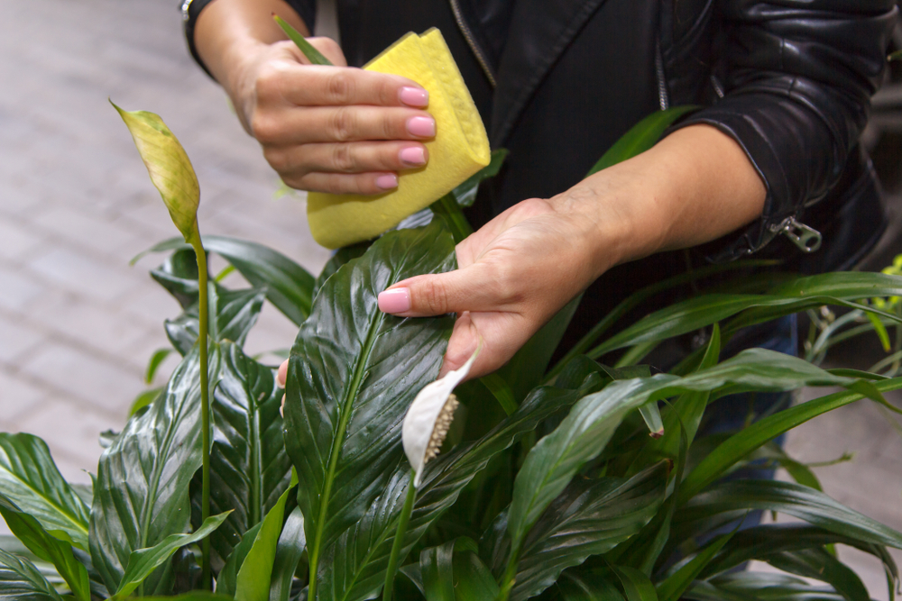
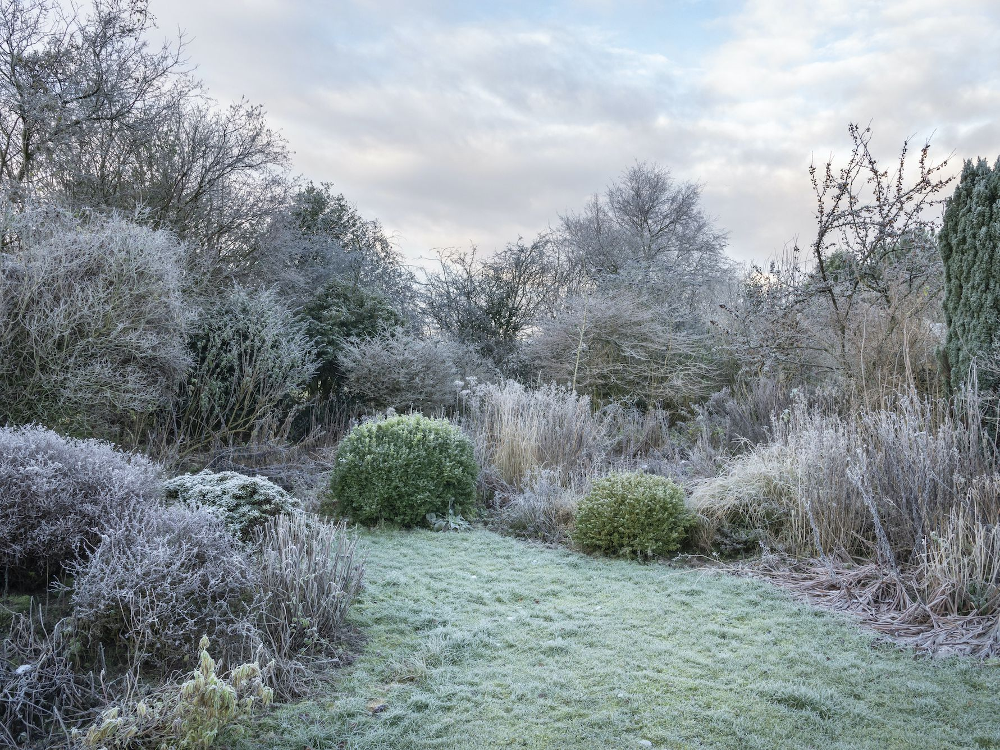

Škodcovia: ako ich zničiť?
Červce, roztoče či štítničky patria k najbežnejším a najnepríjemnejším škodcom. Dôležitá je preto pravidelná kontrola rastlín a prevencia.
Červce, roztoče či štítničky patria k najbežnejším a najnepríjemnejším škodcom. Dôležitá je preto pravidelná kontrola rastlín a prevencia.

Očarujúca papraď! Splňte týchto 5 podmienok a bude sa vám v pestovaní dariť
Prečítajte si naše rady a triky, ako pripraviť svoju záhradu na náročne zimné obdobie. Všetko sa dozviete v našom članku.

Milujete ruže? Tak si prečítajte naše rady ako ich donútiť kvitnúť čo najdlhšie.
Ukážeme vám krok po kroku ako vysádzať jarné cibuľoviny a tak sa pripraviť na jar
Síce väčšinu balkónových rastlín je nutné pred zimou zlikvidovať, nájdete medzi nimi aj také, ktoré vás budú svojou krásou tešiť aj budúcu sezónu. Ktoré sú to a ako sa o ne teraz postarať?
Zasielky posielame pomocou Slovenskej Posty alebo Zasielkovne.
Rastlinky setrne zabalime a pribalime vyhrevne teleso.
Zasielku mozte reklamovat do 2 tyzdnov
Damián Kukurica
Dominika Papánová
Hana Mrkvičková
Contact us: